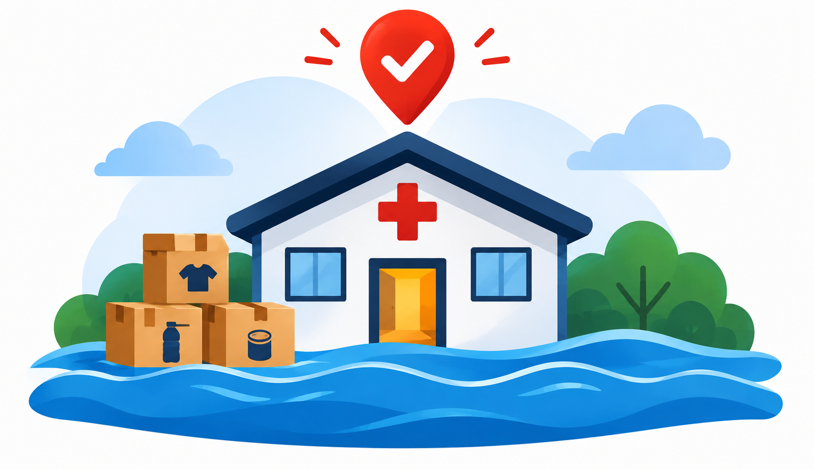

ENCHENTES E DESASTRES
Cada doação no lugar certo.
Em uma enchente, a solidariedade chega rápido, mas nem sempre onde falta. A Doação
Certa mostra,
em tempo real, do que cada abrigo precisa — e do que não precisa — para que
doadores e voluntários ajudem de verdade.
